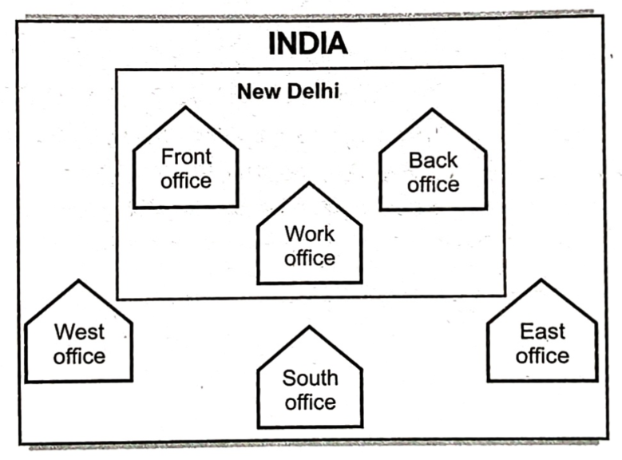

1. Introduction to Computer Networks
In the history of mankind, networking in any form has always yielded better results, outcomes, and utilization of resources. Connections among humans make a human network, and similarly, connections among computers make a computer network.
COMPUTER NETWORK: A computer network is a collection of interconnected autonomous computing devices designed to exchange information or share resources. An autonomous device is one that cannot be started, stopped, or controlled by another device on the network.
Advantages of Networks
- Share Resources: Devices like printers and scanners can be shared, which is cheaper than buying equipment for each computer.
- Share Storage: Files can be accessed from any machine on the network, allowing for shared data.
- Share Software: Software can be installed centrally rather than on each machine.
- Improve Communications: Messages, such as internal email, can be sent easily between users.
Disadvantages of Networks
- Complexity and Cost: Systems are more complex to run, which can add to costs and may require specialist staff.
- Management Issues: If networks are badly managed, services can become unusable, and productivity falls.
- Central Server Reliance: If software and files are held centrally, it may be impossible to carry out any work if the central server fails.
- Security: File security is more important, especially if connected to WANs, requiring protection from viruses.
10.2.1 Components of a Computer Network
A network is formed by several components working together. The major components are:
- (a) Hosts/Nodes: These are the computers (PCs, laptops, smartphones) attached to a network to share resources. They are also called workstations.
- (b) Servers: A server is a powerful computer that facilitates networking tasks like sharing data, resources, and communication among hosts. SERVER: A computer that facilitates the sharing of data, software, and hardware resources on the network. On large networks, there can be dedicated servers for specific tasks (e.g., file server, printer server).
- (c) Clients: A client is a host computer that requests services from a server.
- (d) Network Hardware: Specialized hardware is required to establish connections and control network traffic. Examples include:
- NIC (Network Interface Card): A card attached to a host to establish network connections. Each NIC has a unique 6-byte (48-bit) physical address called the MAC address.
- Hub, Switch, Router: These are connectivity devices.
- (e) Communication Channel: This is the medium through which hosts and servers interact.
- Wired Channels: Guided media like network cables (twisted-pair, coaxial, fiber-optic).
- Wireless Channels: Unguided media like radio waves, microwaves, and satellites.
- (f) Software: This includes protocols (pre-decided rules for connection and interaction) and network operating systems.
- (g) Network Services: Applications that provide functionalities like DNS (Domain Name System), file sharing, and VoIP (Voice over IP).
2. Types of Networks
Computer networks vary in size, complexity, and geographical spread. They can be classified based on these parameters.
2.1 Based on Geographical Spread
- PAN (Personal Area Network): Interconnection of IT devices within the range of an individual, typically within 10 meters. It's used for transferring files between personal devices like laptops, smartphones, and printers, often using wireless technology like WiFi or Bluetooth.
- LAN (Local Area Network): Confined to a localized area like an office, building, or factory (traditionally up to 1 km). The main purpose is resource sharing (data, printers, software). In a typical LAN, a file server stores shared software, and connected computers are called workstations.
- MAN (Metropolitan Area Network): Spans an area as large as a city. This term is becoming less common.
- WAN (Wide Area Network): Spreads across countries or a very large geographical area. A WAN can be a group of LANs connected. Computers in a WAN are often connected through public networks (like the telephone system), leased lines, or satellites. The Internet is the largest WAN.
| Feature | Personal Area Network (PAN) | Local Area Network (LAN) | Metropolitan Area Network (MAN) | Wide Area Network (WAN) |
|---|---|---|---|---|
| Geographical Scope | Very small (a few meters/feet) | Small (single room, building, or campus) | Moderate (a city or a large campus) | Large (countries, continents, global) |
| Ownership | Individual | Private (single organization) | Private or Public (e.g., city council, large ISP) | Private or Public (e.g., telecom companies, large corporations) |
| Data Transfer Speed | Low to Medium (Mbps) | High (100 Mbps to 10 Gbps+) | Medium to High (100 Mbps to several Gbps) | Low to High (Kbps to Gbps, depending on infrastructure) |
| Primary Technologies | Bluetooth, Wi-Fi Direct, NFC, USB, Infrared | Ethernet (wired), Wi-Fi (wireless) | Fiber Optics, Ethernet, WiMAX, ATM, FDDI | Fiber Optics, Satellite, MPLS, Leased Lines, Cellular (4G/5G) |
| Connectivity | Connects personal devices around an individual | Connects devices within a limited physical area | Interconnects multiple LANs within a city | Interconnects multiple LANs/MANs over large distances |
| Primary Purpose | Personal device synchronization, short-range data transfer | Resource sharing (files, printers), local communication | High-speed connectivity across a city, shared services | Global communication, remote access, distributed applications |
| Examples of Devices | Smartphone, Smartwatch, Headphones, Laptop, Tablet, Wireless Mouse, Fitness Tracker | PCs, Laptops, Servers, Printers, Routers, Switches, Access Points | Routers, Switches (high-capacity), Fiber Optic Converters, Wireless Bridges | Routers (high-end), Switches (core), Modems, Satellite Dishes, Cellular Towers |
| Management | Simple, often self-managed | Managed by local IT staff | Managed by city IT, large corporations, or ISPs | Managed by ISPs, telecommunication companies, or large enterprise IT departments |
| Cost of Setup/Maint. | Very Low | Moderate | High | Very High |
| Latency | Very Low | Low | Moderate | High |
2.2 Based on Component Roles
- Peer-to-Peer (P2P) Networks: Each computer on the network is equal and can act as both a client and a server. There is no central computer in charge. These are popular for home networks and small companies because they are inexpensive and easy to install, but they are limited in scope and difficult to secure. They typically have up to ten computers.
- Client-Server Networks: Larger networks prefer centralized control with clearly designated servers and clients. A dedicated server's only job is to help workstations access resources. CLIENT/SERVER: A client is a device that requests and uses network resources. A server is a computer dedicated to processing client requests.
| Feature | Client-Server | Peer-to-Peer (P2P) |
|---|---|---|
| Security | The server controls security. | No central control over security. |
| Management | The server manages the network; it needs a dedicated team. | No central control; anyone can set it up. |
| Dependency | Clients are dependent on the server. | Clients are not dependent on a central server. |
| Performance | The server can be upgraded to handle high demand. | Slow machines can slow down the network. |
| Backups | Data is backed up on the main server. | Each computer must be backed up individually. |
3. Evolution of Networking
3.1 ARPANET
The foundation of the Internet was laid in 1969 with a U.S. Department of Defense project called ARPANET (Advanced Research Projects Agency NETwork). Its goal was to connect computers at universities and U.S. defense facilities. In the mid-80s, the National Science Foundation (NSF) created a more capable network, NSFnet, for academic research. Private companies also built their own networks. The internetworking of ARPANET, NSFnet, and these private networks formed what we now call the Internet. ARPANET was shut down in 1990.
3.2 The Internet
The Internet is a worldwide network of computer networks. It connects many smaller networks, allowing all connected computers to exchange information using a common set of communication rules called protocols, specifically TCP/IP (Transmission Control Protocol/Internet Protocol).
How Does the Internet Work?
Most computers connect to smaller networks, which in turn connect through gateways to the Internet backbone.
- GATEWAY: A device that connects dissimilar networks.
- BACKBONE: A central interconnecting structure that connects one or more networks.
The process of sending a message involves:
- The source computer divides the message into small parts called packets.
- Each packet is numbered serially.
- Packets are sent to the destination address.
- The destination computer receives the packets (which may arrive out of order) and requests re-transmission for any lost or garbled packets.
- The packets are reassembled in the correct order to form the original message.
TCP/IP Roles:
- TCP (Transmission Control Protocol): Divides the message into packets at the source and reassembles them at the destination.
- IP (Internet Protocol): Handles the destination address to ensure each packet is routed correctly.
3.3 The Interspace
InterSpace is a vision for the future of the Internet. It is a client/server software program that allows multiple users to communicate online with real-time audio, video, and text chat in dynamic 3D environments. It represents an application environment for interconnecting spaces to manipulate information.
4. Switching Techniques & Communication Terminologies
4.1 Switching Techniques
- Circuit Switching: A dedicated physical connection is established before data transfer (e.g., telephone call).
- Message Switching: The entire message is sent from one node to the next, stored, and then forwarded ("store and forward").
- Packet Switching: The message is broken down into fixed-size packets. Each packet is routed independently and reassembled at the destination. This is the method used by the Internet.
4.2 Data Communication Terminologies
- Data Channel: The medium used to carry information from one point to another.
- Baud: A unit of measurement for the information-carrying capacity of a communication channel. It is often synonymous with bps.
- Bits Per Second (bps): The speed at which data is transferred.
- kbps: kilobits per second (thousands of bits)
- mbps: megabits per second (millions of bits)
- Kbps: KiloBytes per second (notice the capital K and B)
- Mbps: MegaBytes per second
- Bandwidth: The difference between the highest and lowest frequencies of a transmission channel. In digital systems, it refers to the data speed in bps. High bandwidth channels are called broadband, and low bandwidth channels are called narrowband.
- Data Transfer Rate: The amount of data transferred per second, measured in bps, Bps, or baud.
5. Transmission Media
Transmission media are the physical paths that connect computers in a network. They can be categorized as guided (cables) or unguided (waves).
Guided Media (Cables)
-
Twisted Pair Cable: Consists of two insulated copper wires twisted together in a double helix to reduce crosstalk (signal interference).
- Advantages: Simple, inexpensive, easy to install, flexible.
- Disadvantages: High attenuation (signal loss over distance), low bandwidth, unsuitable for broadband.
- Types:
- Unshielded Twisted Pair (UTP): Common for electronic communications. Comes in various categories (CAT1 to CAT8) with different data rates. The maximum segment length is 100 meters.
- Shielded Twisted Pair (STP): Has shielding around the wires for better protection against interference. It's heavier and costlier than UTP. The maximum segment length is 100 meters.
-
Coaxial Cable: Consists of a solid wire core surrounded by insulation and a wire mesh shield. It has better electrical properties and higher bandwidth than twisted pairs.
- Advantages: Better data transmission than twisted pair, can be used for shared cable networks and broadband, higher bandwidth (up to 400 Mbps).
- Disadvantages: More expensive and less compatible with twisted pair.
- Types:
- Thicknet: Can have segments up to 500 meters.
- Thinnet: Can have segments up to 185 meters.
-
Optical Fiber: Consists of thin strands of glass that carry light signals. Data is modulated onto a light beam from an LED or laser.
- Advantages: Immune to electrical interference, secure, very high transmission capacity, suitable for broadband.
- Disadvantages: Fragile, difficult to install and connect, expensive.
- Types:
- Single-mode: Supports segment lengths up to 2 km and bandwidth up to 100 Mbps.
- Multi-mode: Supports segment lengths up to 100 km and bandwidth up to 2 Gbps.
Unguided Media (Wireless)
- Microwave (Terrestrial Microwave): Uses high-frequency radio waves for long-distance, line-of-sight communication between parabolic antennas mounted on towers.
- Radio Wave: Uses radio frequencies for communication. Offers mobility and is cheaper than laying cables.
- Satellite (Satellite Microwave): Uses satellites in orbit as relay stations to transmit signals over very large areas.
- Infrared: Uses infrared light to send data over short distances. It cannot penetrate walls, making it secure. Used in TV remotes and PDAs.
- Laser: Requires a direct line-of-sight and is unidirectional. Offers higher speed than microwaves but can be affected by weather. Used for point-to-point transmission between buildings.
6. Network Topologies
The pattern of interconnection of nodes in a network is called the topology. Factors to consider when choosing a topology include cost, flexibility, and reliability.
- Star Topology: All nodes are connected to a central node (hub or switch).
- Advantages: Easy to service and diagnose problems, failure of one connection doesn't affect the rest of the network, simple access protocols.
- Disadvantages: Requires long cable lengths, difficult to expand, entire network fails if the central node fails.
- Bus (or Linear) Topology: All nodes are attached to a single length of cable (the bus). Transmissions travel the length of the bus and can be received by all other stations. Terminators at each end absorb the signal.
- Advantages: Requires short cable length, simple and reliable architecture, easy to extend.
- Disadvantages: Fault diagnosis and isolation are difficult, nodes must be intelligent to manage access.
- Ring (or Circular) Topology: Each node is connected to two neighboring nodes, forming a loop. Data travels in one direction from node to node.
- Advantages: Short cable length, no need for wiring closets, suitable for optical fibers.
- Disadvantages: Failure of one node causes the entire network to fail, difficult to diagnose faults and reconfigure.
- Tree Topology: A variation of the bus topology, shaped like an inverted tree with a central root branching out. It is a hybrid topology suited for hierarchical data flow.
- Advantages: Point-to-point wiring for individual segments, supported by many vendors.
- Disadvantages: If the backbone breaks, the entire segment fails; more difficult to configure than other topologies.
- Mesh Topology: Each node is connected to more than one other node, providing alternative routes. Excellent for long-distance networking due to its backup and rerouting capabilities.
- Advantages: Robust, secure, easy fault diagnosis.
- Disadvantages: Difficult installation, high cabling cost.
- Fully Connected Mesh: Every node is directly connected to every other node. This is the most reliable but also the most expensive.
Check Point 10.2
- What is meant by topology? Name some popular topologies.Answer: Topology refers to the pattern of interconnection of nodes in a network. Popular topologies include Star, Bus, Ring, Tree, and Mesh.
- What are the factors that must be considered before making a choice for the topology?Answer: Cost, flexibility, and reliability.
- What are the similarities and differences between bus and tree topologies?Answer: Both rely on a central backbone cable. A tree topology is essentially a series of interconnected bus networks. A key difference is that a tree topology allows for more devices and greater distances than a single bus network.
- What are the limitations of star topology?Answer: The main limitations are its dependency on the central node (if it fails, the network fails) and the potentially long cable lengths required to connect every node to the center.
- When do you think ring topology becomes the best choice for a network?Answer: Ring topology can be a good choice in networks that require high performance over long distances using optical fibers, where data flows in a predictable, orderly fashion.
- Write two advantages and two disadvantages of Bus Topology in network.Advantages: Requires short cable length, simple architecture.
Disadvantages: Fault diagnosis is difficult, a break in the main cable can disable the network. - Give two advantages and two disadvantages of following network topologies: (i) Star (ii) Tree (iii) Bus.(i) Star: Adv: Easy to manage, failure of one node doesn't affect others. Disadv: Central point of failure, requires more cable.
(ii) Tree: Adv: Point-to-point wiring, supported by many vendors. Disadv: Backbone failure affects segments, complex configuration.
(iii) Bus: Adv: Short cable length, simple architecture. Disadv: Difficult fault diagnosis, main cable break downs the network.
7. Network Devices
Modem
A modem, short for modulator/demodulator, is a crucial networking device that facilitates communication between digital devices (like computers) and analog transmission lines (like telephone lines, cable lines, or fiber optic lines). Its primary function is to convert digital data signals into analog signals suitable for transmission over these lines (modulation) and to convert received analog signals back into digital data for the computer to understand (demodulation).
RJ-45 Connector
The RJ-45 connector (Registered Jack-45) is a ubiquitous eight-wire, eight-position (8P8C) modular connector, primarily used for connecting computers and other network devices within Local Area Networks (LANs), particularly Ethernet networks.
Network Interface Card (NIC) / Ethernet Card
A Network Interface Card (NIC), often referred to simply as an Ethernet card in the context of wired networks, is a crucial hardware component that enables a computer to connect to a network. It acts as an intermediary, translating data from the computer into a format that can be transmitted over the network medium.
Hubs
A hub is a fundamental networking device designed to connect multiple computers or other network devices within a Local Area Network (LAN). It acts like a multi-port repeater, broadcasting any incoming signal to all of its other connected ports.
Switch
A network switch is a "smart" device that efficiently connects multiple computers into subnets. It learns the MAC addresses of devices on its ports and forwards data only to the intended destination port, reducing traffic and improving performance.
Repeater
A repeater's primary function is to amplify or regenerate a signal that has weakened due to attenuation as it travels over a network cable, thus extending the network's reach.
Bridge
A network bridge operates at the data link layer (Layer 2) and connects two separate network segments that use identical protocols. It intelligently filters traffic by blocking or forwarding packets based on their MAC address.
Router
A router operates at the Network Layer (Layer 3) and forwards data packets between different computer networks using logical (IP) addresses. It uses a routing table to determine the most efficient path for data.
Gateway
A gateway is a device that connects dissimilar networks, acting as an entrance point from one network to another. Modern routers often include gateway and firewall functionalities.
WiFi Card
A wireless network adapter (Wi-Fi card or WLAN card) enables a computer to connect to a wireless network. It integrates a radio and an antenna to transmit and receive radio signals.
Check Point 10.3
- What is a modem? Name two categories of modems.Answer: A modem modulates digital signals to analog for transmission and demodulates them back. Two categories are internal and external modems.
- Define the following: (i) RJ-45 (ii) Ethernet (iii) Ethernet card (iv) hub (v) switch.(i) RJ-45: An 8-wire connector for Ethernet cables.
(ii) Ethernet: A standard for wired LANs.
(iii) Ethernet card: A NIC for Ethernet networks.
(iv) Hub: A device that broadcasts data to all ports.
(v) Switch: A device that forwards data only to the destination port. - Define the following: (i) Protocol (ii) Host (iii) Repeater (iv) Bridge (v) Router (vi) Gateway.(i) Protocol: Rules for communication.
(ii) Host: A computer on a network.
(iii) Repeater: Regenerates signals.
(iv) Bridge: Connects similar networks.
(v) Router: Connects different networks.
(vi) Gateway: Connects dissimilar networks. - Briefly explain file transfer protocol.Answer: FTP (File Transfer Protocol) is a standard set of rules for transferring files between computers over the Internet.
- What is protocol? Name some commonly used protocols.Answer: A protocol is a set of rules for communication. Common protocols include HTTP, FTP, TCP/IP, and SMTP.
- What is TCP/IP? What is HTTP?TCP/IP: The foundational protocol suite of the Internet.
HTTP: The protocol for transferring web pages. - What is the purpose of using a gateway in the context of networking?Answer: To connect dissimilar networks.
- What is the purpose of using a repeater in the context of networking?Answer: To regenerate a weak signal to extend the network's range.
8. Communication Protocols
A protocol is a formal description of message formats and the rules machines must follow to exchange messages.
HTTP (Hypertext Transfer Protocol)
Hypertext Transfer Protocol (HTTP) is the foundational set of rules governing how information is exchanged and displayed on the World Wide Web. It operates as an application-level protocol, meaning it primarily dictates how applications, such as web browsers and servers, communicate with each other to transfer data.
At its core, HTTP enables the seamless transfer of various types of files, including:
- Text: This encompasses plain text documents, HTML (Hypertext Markup Language) files that structure web pages, and CSS (Cascading Style Sheets) files that define their visual presentation.
- Graphics: Images in formats like JPEG, PNG, and GIF are integral to web content, and HTTP facilitates their delivery.
- Sound: Audio files, often in formats such as MP3 or WAV, can be streamed or downloaded via HTTP to enrich the user experience.
- Video: Video content, whether streaming live broadcasts or on-demand clips in formats like MP4 or WebM, is also transmitted efficiently using HTTP.
When you type a URL into your browser or click a link, your browser sends an HTTP request to a web server. The server then processes this request and sends back an HTTP response containing the requested data, which your browser then renders for you to view. This client-server model, orchestrated by HTTP, is fundamental to how the entire World Wide Web functions, making it possible for users to access and interact with a vast array of digital content from anywhere in the world.
FTP (File Transfer Protocol)
File Transfer Protocol (FTP) is a venerable and widely used standard network protocol for transferring computer files from a server to a client or vice versa on a computer network. Operating on a client-server model, FTP facilitates the exchange of files between different computers connected over the Internet or a local area network (LAN). It is an application layer protocol that utilizes separate control and data connections between the client and the server.
The control connection is established on port 21 (default) and is used for sending commands and receiving replies, such as authentication requests, file listing commands, or instructions to upload/download a file. Once a data transfer command is initiated, a data connection is established on a dynamic port (or port 20 in active mode) for the actual transmission of the file data. This separation of control and data channels allows for greater flexibility and efficiency in file transfers.
FTP supports two primary modes for data transfer:
- Active Mode: In active mode, the client initiates the control connection to the server's port 21. When a data transfer is requested, the server then initiates the data connection back to a specified port on the client. This mode can sometimes be problematic when the client is behind a firewall that blocks incoming connections.
- Passive Mode: To overcome firewall issues, passive mode was introduced. In passive mode, the client still initiates the control connection to the server's port 21. However, when a data transfer is requested, the server opens a specific port (a high-numbered, ephemeral port) and informs the client to connect to that port for the data transfer. This means the client initiates both the control and data connections, making it more firewall-friendly.
While highly functional, the original FTP protocol transmits data, including usernames and passwords, in plaintext, which makes it vulnerable to eavesdropping and security breaches. To address these security concerns, several secure variants of FTP have emerged:
- FTPS (FTP Secure): This is FTP with an added layer of security using SSL/TLS (Secure Sockets Layer/Transport Layer Security) encryption. FTPS can operate in two modes:
- Explicit FTPS (FTPES): The client explicitly requests an SSL/TLS session after establishing the control connection.
- Implicit FTPS: The client automatically assumes an SSL/TLS session from the start, typically using a dedicated port (e.g., port 990 for implicit FTPS control connection).
- SFTP (SSH File Transfer Protocol): Although it shares a similar name, SFTP is a completely different protocol that runs over the Secure Shell (SSH) protocol. SSH provides a secure channel over an unsecured network by encrypting the entire communication. SFTP is more secure and is often preferred for sensitive data transfers as it encrypts both commands and data. It typically uses port 22, the same as SSH.
Common uses of FTP include:
- Website publishing: Web developers often use FTP to upload website files (HTML, CSS, images, etc.) from their local development environment to a web server.
- Software distribution: Many software companies use FTP servers to distribute their software applications and updates to users.
- Backup and archiving: Users and organizations can use FTP to transfer large files for backup purposes to remote servers.
- Sharing large files: While not as common for casual sharing as cloud storage services, FTP can still be used to share very large files between individuals or organizations with direct access to an FTP server.
Despite the rise of cloud storage solutions and more modern file transfer protocols, FTP (and its secure variants) remains a fundamental and widely deployed method for file transfer in many professional and technical environments due to its simplicity, robust nature, and widespread support across various operating systems and network devices.
TCP/IP (Transmission Control Protocol/Internet Protocol)
The foundational protocol suite of the Internet, TCP/IP is a layered set of communication protocols that define how data is transmitted across networks. It's not a single protocol but a collection of protocols working together, each responsible for different aspects of communication. This layered approach allows for flexibility and scalability, as individual layers can be updated or replaced without affecting the entire system.
- TCP (Transmission Control Protocol): Operating at the transport layer, TCP is responsible for providing reliable, ordered, and error-checked delivery of a stream of data between applications. Key features of TCP include:
- Connection-oriented: TCP establishes a connection between two applications before data transfer begins, ensuring a dedicated communication path.
- Sequencing and Acknowledgement: It assigns a sequence number to each segment of data and requires acknowledgments from the receiver to ensure all data arrives in the correct order and without loss.
- Flow Control: TCP manages the rate of data transmission to prevent a fast sender from overwhelming a slow receiver.
- Congestion Control: It employs mechanisms to reduce network congestion by adjusting the data transmission rate when the network becomes overloaded.
- Error Detection and Correction: TCP uses checksums to detect corrupted data and retransmits lost or corrupted segments.
- IP (Internet Protocol): Residing at the network layer, IP provides the basic service of getting datagrams (packets) to their destination. IP is the protocol that enables internetworking, allowing data to traverse multiple interconnected networks. Its core functions include:
- Addressing: IP uses logical addresses (IP addresses) to identify devices on a network, enabling packets to be routed to the correct destination.
- Packet Fragmentation: IP can break down large packets into smaller fragments if necessary to accommodate the maximum transmission unit (MTU) of a network link.
- Routing: IP determines the best path for a packet to travel from its source to its destination across various interconnected networks, using routing tables and algorithms.
- Connectionless: Unlike TCP, IP is connectionless, meaning it does not establish a dedicated connection before sending data. Each packet is treated independently.
- Unreliable: IP does not guarantee delivery, order, or error-checking. These responsibilities are handled by higher-layer protocols like TCP. IP simply strives to deliver packets on a best-effort basis.
SLIP (Serial Line Internet Protocol) / PPP (Point-to-Point Protocol)
Protocols for relaying IP packets over serial lines (like dial-up telephone lines). PPP has largely replaced SLIP as it is more robust, supporting dynamic address assignment and link testing.
Email Protocols
- SMTP (Simple Mail Transfer Protocol): SMTP is a fundamental application layer protocol within the TCP/IP suite, specifically designed for the efficient and reliable transmission of email across networks. Its primary function is to facilitate the sending of email from a client (such as an email application like Outlook or Gmail's web interface) to an email server. When a user composes and sends an email, their email client establishes a connection with an SMTP server. This server then takes responsibility for relaying the email to the recipient's mail server. SMTP defines the rules and commands for this communication, ensuring that the email is correctly addressed, authenticated (if required), and delivered to the intended destination. While SMTP is primarily used for sending, other protocols like POP3 (Post Office Protocol 3) or IMAP (Internet Message Access Protocol) are employed for retrieving emails from a server by a client.
- POP3 (Post Office Protocol 3): POP3 (Post Office Protocol version 3) is a standard protocol used by email clients to retrieve email from a mail server. It's designed for simple, "store-and-forward" email retrieval. When an email client connects to a POP3 server, it typically downloads all new messages from the server to the local device. A key characteristic of POP3 is that, by default, messages are deleted from the server once they have been successfully downloaded to the client. This means that if you check your email on one device (e.g., your desktop computer) using POP3, those messages might not be available if you try to access your email from another device (e.g., your smartphone) later, as they've been removed from the server. This can be beneficial for freeing up server space, but it can also lead to issues if you need to access your emails from multiple locations or devices. While some POP3 clients offer an option to "leave a copy of messages on the server," this is not the default behavior and is implemented client-side. In contrast, protocols like IMAP (Internet Message Access Protocol) are designed for synchronizing email across multiple devices, leaving messages on the server until explicitly deleted by the user.
- IMAP (Internet Message Access Protocol): IMAP is a widely used protocol for accessing email messages on a mail server. Unlike POP3, which typically downloads messages to a single device and removes them from the server, IMAP is designed to keep messages on the server. This fundamental difference offers significant advantages for modern email usage.
Key Features and Benefits of IMAP:- Server-Side Storage: With IMAP, all your email messages and their associated folders are stored on the mail server. This means your email collection is always accessible from any device with an internet connection, whether it's your desktop computer, laptop, smartphone, or tablet.
- Multi-Client Access: This is one of IMAP's most compelling features. Because messages remain on the server, you can manage your email from multiple email clients simultaneously without issues. For example, if you read an email on your phone, it will be marked as read on your desktop client as well. Any changes you make, such as moving an email to a folder or deleting it, are synchronized across all connected clients.
- Consistent Email Experience: IMAP ensures a consistent view of your mailbox regardless of the client you're using. Your folder structure, read/unread status, flagged messages, and even drafts are all mirrored on the server and thus reflected across all your devices.
- Enhanced Organization and Management: IMAP allows for sophisticated server-side management of emails. You can create, rename, and delete folders directly on the server, and these changes will propagate to all your clients. This makes organizing your vast email archive much more efficient.
- Reduced Local Storage Requirements (Optional): While IMAP syncs mail, it typically downloads only message headers or a small preview by default, downloading the full message content only when requested. This can save local storage space, especially on mobile devices. However, many clients also offer options to cache messages locally for offline access.
- Reliable Backup: Since your emails reside on the server, they are often part of the mail provider's backup routines, adding an extra layer of security against data loss on your local devices.
- Offline Access (with caching): Most modern IMAP clients provide mechanisms to cache email data locally, allowing you to access and compose emails even when offline. Changes made while offline are then synchronized with the server once an internet connection is re-established.
How IMAP Works:When you configure an email client to use IMAP, it connects to the IMAP server (usually on port 143 for unencrypted connections or port 993 for encrypted SSL/TLS connections). The client then sends commands to the server to perform actions like listing folders, retrieving message headers, fetching full message content, searching for emails, or moving messages between folders. The server processes these commands and returns the requested data or confirms the action.
In essence, IMAP provides a highly flexible and powerful method for interacting with your email, making it the preferred choice for most users who access their email from multiple devices and value a synchronized and consistent experience.
9. Wireless & Mobile Computing
Wireless Communication: Data communication without the use of landlines (e.g., cellular, WiFi, satellite). The device is often continuously connected.
Mobile Computing: The computing device is not continuously connected to a central network (e.g., a laptop used on the go).
Wireless/Mobile Technologies
- GSM (Global System for Mobile communications): A leading digital cellular standard. It uses TDMA (Time Division Multiple Access) to allow multiple calls on the same frequency. Uses a removable SIM (Subscriber Identity Module) card to store user information.
- CDMA (Code-Division Multiple Access): A digital cellular technology that uses spread-spectrum techniques. It doesn't assign a specific frequency to each user; instead, all users transmit over the full available spectrum, with each conversation encoded with a unique digital sequence.
- WLL (Wireless in Local Loop): A system that connects subscribers to the public telephone network using radio signals as a substitute for copper wires, providing "last mile" connectivity.
- GPRS (General Packet Radio Service): A packet-based wireless communication service that provides "always-on" data connections for mobile devices, with speeds from 56 to 110 kbps.
10. Security & Internetworking Concepts
Internetworking Terms
- WWW (World Wide Web): A system of interlinked hypertext documents accessed via the Internet.
- Telnet: An older utility for logging on to remote computer systems.
Network Security Concepts
- Firewall: A system that prevents unauthorized access to a private network.
- Cookies: Small pieces of data stored on a user's computer by a website.
- Hackers vs. Crackers: Hackers explore systems, while crackers break into them with malicious intent.
- Cyber Law: Law related to the Internet and electronic elements.
Viruses
A computer virus is malicious software that replicates by modifying other programs. Other forms of malware include:
- Worms: Standalone malware that replicates to spread to other computers over a network.
- Trojan Horse: Malware disguised as legitimate software.
11. Questions from PDF
Question 3
Briefly discuss wireless and mobile computing, and various techniques used for wireless and mobile computing.
Wireless Computing: This refers to data communication without the use of landlines. The device is often continuously connected to a network (e.g., Wi-Fi, satellite communication).
Mobile Computing: This implies that the computing device is not continuously connected to a central network. It's designed for use while on the go (e.g., using a laptop on a train and syncing data later).
Techniques include:
- GSM (Global System for Mobile communications): A digital cellular standard using TDMA.
- CDMA (Code-Division Multiple Access): A digital cellular standard using spread-spectrum technology.
- WLL (Wireless in Local Loop): Uses radio signals to connect subscribers to the public telephone network.
- GPRS (General Packet Radio Service): An "always-on" packet-based service for mobile data.
Question 4
Define network security. What is its need? How can it be achieved?
Definition: Network security consists of the policies and practices adopted to prevent and monitor unauthorized access, misuse, modification, or denial of a computer network and its resources.
Need: It is crucial to protect data and resources from theft, data loss, and sabotage. It ensures the network remains reliable and usable for authorized users.
How to achieve it:
- Firewalls: To block unauthorized access.
- Authentication: Using usernames and passwords to verify user identity.
- Encryption: To protect data during transmission.
- Antivirus Software: To protect against malware.
- Authorization: Granting different levels of access to different users.
Question 5
(a) What is a Repeater?
(b) Expand the following terms with respect to Networking: (i) FTP (ii) CDMA (iii) HTML (iv) SMS
- FTP: File Transfer Protocol
- CDMA: Code-Division Multiple Access
- HTML: HyperText Markup Language
- SMS: Short Message Service
(c) How is an Email different from a Chat?
Email is an asynchronous communication method where messages are stored and forwarded, similar to sending a letter. The recipient does not need to be online at the time of sending.
Chat is a synchronous (real-time) communication method where messages are exchanged instantly, requiring participants to be online simultaneously, much like a live conversation.
(d) "New York Avenue" is planning to expand their network in India, starting with two cities in India to provide infrastructure for distribution of their canned products. The company has planned to set up their main offices in Ahmedabad, at three different locations and have named their offices as "Work Office", "Factory" and "Back Office. The company has its Corporate Unit in Delhi. A rough layout of the same is as follows:
Approximate distance between these offices is as follows:
| From | To | Distance |
|---|---|---|
| Work Office | Back Office | 110 Mtr |
| Work Office | Factory | 14 KM |
| Work Office | Corporate Office | 1280 KM |
| Back Office | Factory | 13 KM |
In continuation of the above, the company experts have planned to install the following number of computers in each of their offices:
| Office | Number of Computers |
|---|---|
| Work Office | 200 |
| Back Office | 115 |
| Factory | 67 |
| Corporate | 75 |
(i) Suggest the kind of network required (out of LAN, MAN, WAN) for connecting each of the following offices:
- Work Office and Factory
- Work Office and Back Office
- Work Office and Factory: LAN (Local Area Network), as the distance (14 KM) is manageable for a local network, although it could also be considered a small MAN.
- Work Office and Back Office: LAN (Local Area Network), as the distance is very short (110m).
- Ahmedabad Offices to Delhi Corporate Unit: WAN (Wide Area Network) is required due to the large geographical distance (1280 KM).
(ii) Which one of the following devices will you suggest for connecting all the computers within each of their office units?
- Switch/Hub
- Modem
- Telephone
(iii) Which of the following communication media, you will suggest to be procured by the company for connecting their local offices in Ahmedabad for very effective (High Speed) communication?
- Telephone Cable
- Optical Fibre
- Ethernet Cable
(iv) Suggest a cable/wiring layout for connecting the company's local office units located in Ahmedabad. Also, suggest an effective method/technology for connecting the company's office unit located in Delhi.
Ahmedabad Layout: A Star topology would be most effective. The "Work Office," with the highest number of computers, should be the central hub. It would connect directly to the "Back Office" and the "Factory." This design simplifies management and ensures that a failure in one link doesn't affect the others.
Connecting to Delhi: A WAN link is necessary. This can be achieved using a dedicated Leased Line for guaranteed bandwidth and security, or a VPN (Virtual Private Network) over the internet for a more cost-effective solution.
(v) Which one of the following devices will you suggest for connecting all the computers within each of their offices?
- Switch/Hub
- Modem
- Telephone
Question 6
Global Village Enterprises has following four buildings in Hyderabad city:
(a) Suggest a cable layout for these buildings.
(b) In each of the buildings, the management wants that each LAN segment gets a dedicated bandwidth i.e., bandwidth must not be shared. How can this be achieved?
(c) The company also wants to make available shared Internet access for each of the buildings. How can this be achieved?
(d) The company wants to link its headoffice in GV1 building to its another office in Japan.
- (i) Which type of transmission medium is appropriate for such a link?
- (ii) What type of network would this connection result into?
(i) Transmission Medium: A Satellite Link or a dedicated undersea Fiber Optic Cable would be appropriate for reliable, high-speed international connectivity.
(ii) Network Type: This connection would result in a WAN (Wide Area Network), as it spans a very large geographical distance across countries.
Question 7
(a) Write two advantages and two dis- advantages for STAR topology.
Advantages:
- Easy to install, manage, and troubleshoot.
- Failure of a single node or cable does not affect the rest of the network.
Disadvantages:
- If the central hub/switch fails, the entire network goes down.
- Requires more cable length compared to a bus topology, which can increase costs.
(b) Write one difference between Telnet and FTP.
(c) Explain the following terms in short: (i) DHTML (ii) ISP
(i) DHTML (Dynamic HTML): Not a language itself, but a collection of technologies (HTML, CSS, and JavaScript) used together to create interactive and animated web pages that can change dynamically without reloading.
(ii) ISP (Internet Service Provider): A company that provides individuals and organizations with access to the Internet and other related services.
(d) Define Packet Switching.
Question 8
(a) Write two advantages and two disadvantages for STAR topology.
Advantages:
- Easy to install, manage, and troubleshoot.
- Failure of a single node or cable does not affect the rest of the network.
Disadvantages:
- If the central hub/switch fails, the entire network goes down.
- Requires more cable length compared to a bus topology, which can increase costs.
(b) Write one difference between coaxial and optical cable.
(c) Explain the following terms in short: (i) FTP (ii) URL
(i) FTP (File Transfer Protocol): A standard network protocol used for transferring computer files between a client and server on a computer network.
(ii) URL (Uniform Resource Locator): The address of a resource on the Internet. It specifies the protocol to use, the domain name, and the path to the resource.
(d) Define Packet Switching.
Question 9
(a) What was the role of ARPANET in Computer Network?
(b) Which of the following is not a unit for data transfer rate? (i) bps (ii) abps (iii) gbps (iv) kbps
(c) What is the difference between Trojan Horse and Virus in terms of computers?
(d) What term we use for a software/hardware device, which is used to block, unauthorized access while permitting authorized communications.
(e) "Learn Together" is an educational NGO. It is setting up its new campus at Jabalpur for its webbased activities. The campus has 4 compounds as shown in the diagram below :
Center to center distances between various Compounds as per architectural drawings (in Metre) is as follows:
| From | To | Distance |
|---|---|---|
| Main Compound | Resource Compound | 110 m |
| Main Compound | Training Compound | 115 m |
| Main Compound | Finance Compound | 35 m |
| Resource Compound | Training Compound | 25 m |
| Resource Compound | Finance Compound | 135 m |
| Training Compound | Finance Compound | 100 m |
Expected Number of Computers in each Compound is as follows :
| Compound | Number of Computers |
|---|---|
| Main Compound | 5 |
| Resource Compound | 15 |
| Training Compound | 150 |
| Accounts Compound | 20 |
(e1) Suggest a cable layout of connections between the compounds.
(e2) Suggest the most suitable place (i.e., compound) to house the server for this NGO. Also provide a suitable reason for your suggestion.
(e3) Suggest the placement of the following devices with justification : (i) Repeater (ii) Hub/Switch
(i) Repeater: A repeater may be needed if any cable run exceeds 100 meters (the standard limit for UTP Ethernet). For example, the connection between the Main Compound and Training Compound (115m) would require a repeater.
(ii) Hub/Switch: A Switch should be placed in each compound to connect the computers within that compound, providing dedicated bandwidth and efficient local traffic management.
(e4) The NGO is planning to connect its International office situated in Mumbai, which out of the following wired communication link, you will suggest for a very high speed connectivity ?: (i) Telephone Analog Line (ii) Optical Fiber (iii) Ethernet Cable
Question 10
(a) What is a Modem?
(b) Expand the following terms with respect to Networking : (i) PPP (ii) GSM (iii) XML (iv) HTTP
- PPP: Point-to-Point Protocol
- GSM: Global System for Mobile communications
- XML: Extensible Markup Language
- HTTP: HyperText Transfer Protocol
(c) How is a Hacker different from a Cracker?
(d) "China Middleton Fashion" is planning to expand their network in India, starting with two cities in India to provide infrastructure for distribution of their product. The company has planned to setup their main office in Chennai at three different locations and have named their offices as "Production Unit", "Finance Unit" and "Media Unit". The company has its corporate unit in Delhi. A rough layout of the same is as follows :
Approximate distance between these Units is as follows :
| From | To | Distance |
|---|---|---|
| Production Unit | Finance Unit | 70 Mtr |
| Production Unit | Media Unit | 15 KM |
| Production Unit | Corporate Unit | 2112 KM |
| Finance Unit | Media Unit | 15 KM |
In continuation of the above, the company experts have planned to install the following number of computers in each of their offices :
| Unit | Number of Computers |
|---|---|
| Production Unit | 150 |
| Finance Unit | 35 |
| Media Unit | 10 |
| Corporate Unit | 30 |
(i) Suggest the kind of network required (out of LAN, MAN, WAN) for connecting each of the following office units :
- Production Unit and Media Unit
- Production Unit and Finance Unit
Production Unit and Media Unit: LAN or MAN.
Production Unit and Finance Unit: LAN.
(ii) Which one of the following devices will you suggest for connecting all the computers within each of their office units?
(iii) Which of the following communication media, you will suggest to be procured by the company for connecting their local office units in Chennai for very effective (High Speed) communication?
(iv) Suggest a cable/wiring layout for connecting the company's local office units located in Chennai. Also, suggest an effective method/technology for connecting the company's office unit located in Delhi.
Chennai Layout: A Star topology with the Production Unit as the central hub connecting to the Finance and Media units.
Connecting to Delhi: A WAN link using technologies like a leased line or VPN would be required to connect the Chennai offices to the Delhi corporate unit.
Question 11
(a) What is the significance of Cyber law?
(b) Expand the following terms with respect to Networking : (i) CDMA (ii) FTP (iii) WLL (iv) HTML
- CDMA: Code-Division Multiple Access
- FTP: File Transfer Protocol
- WLL: Wireless in Local Loop
- HTML: HyperText Markup Language
(c) Which of the following unit measures the speed with which data can be transmitted from one node to another node of a network? Also, give the expansion of the suggested unit. (i) Mbps (ii) KMph (iii) MGps
(d) "Bhartiya Connectivity Association" is planning to spread their offices in four major cities in India to provide regional IT infrastructure support in the field of Education & Culture. The company has planned to setup their head office in New Delhi in three locations and have named their New Delhi offices as Front Office, Back Office and Work Office. The company has three more regional offices as "South Office, East Office and West Office located in other three major cities of India. A rough layout of the same is as follows :

Approximate distances between these offices as per network survey team is as follows :
| Place From | Place To | Distance |
|---|---|---|
| Back Office | Front Office | 10 KM |
| Back Office | Work Office | 70 Metre |
| Back Office | East Office | 1291 KM |
| Back Office | West Office | 790 KM |
| Back Office | South Office | 1952 KM |
In continuation of the above, the company experts have planned to install the following number of computers in each of their offices :
| Office | Number of Computers |
|---|---|
| Back Office | 100 |
| Front Office | 20 |
| Work Office | 50 |
| East Office | 50 |
| West Office | 50 |
| South Office | 50 |
(i) Suggest network type (out of LAN, MAN, WAN) for connecting each of the following set of their offices :
- Back Office and Work Office
- Back Office and South Office
Back Office and Work Office: LAN (Local Area Network).
Back Office and South Office: WAN (Wide Area Network).
(ii) Which device you will suggest to be produced by the company for connecting all the computers with in each of their offices out of the following devices?
(iii) Which of the following communication medium, you will suggest to be procured by the company for connecting their local offices in New Delhi for very effective and fast communication?
(iv) Suggest a cable/wiring layout for connecting the company's local offices located in New Delhi. Also, suggest an effective method/technology for connecting the company's regional offices-"East Office, West Office" and "South Office" with offices located in New Delhi.
New Delhi Layout: A Star topology with the Back Office as the central hub connecting to the Front Office and Work Office.
Connecting Regional Offices: A WAN would be required. This can be established using leased lines, satellite links, or a VPN over the internet to connect the East, West, and South offices to the main offices in New Delhi.
Question 12
(a) Differentiate between Internet and Intranet.
(b) Expand the following terms: (i) CDMA (ii) URL (iii) HTTP (iv) WAN
- CDMA: Code-Division Multiple Access
- URL: Uniform Resource Locator
- HTTP: HyperText Transfer Protocol
- WAN: Wide Area Network
(c) Write one advantage of STAR topology as compared to BUS topology.
(d) UNIVERSITY OF CORRESPONDENCE in Allahabad is setting up the network between its different wings. There are 4 wings named as Science (S), Journalism (J), ARTS (A) and Home Science (H). Distance between various wings are given below :
| Wing Connection | Distance |
|---|---|
| Wing A to Wing S | 100 m |
| Wing A to Wing J | 200 m |
| Wing A to Wing H | 400 m |
| Wing S to Wing J | 300 m |
| Wing S to Wing H | 100 m |
| Wing J to Wing H | 450 m |
Number of Computers
| Wing | Number of Computers |
|---|---|
| Wing A | 150 |
| Wing S | 10 |
| Wing J | 5 |
| Wing H | 50 |
(i) Suggest a suitable Topology for networking the computer of all wings.
(ii) Name the wing where the Server to be installed. Justify your answer.
(iii) Suggest the placement of Hub/Switch in the network.
(iv) Mention an economic technology to provide internet accessibility to all wings.
Question 13
(a) Name two transmission media for networking.
2. Optical Fiber
(b) Expand the following terms: (i) XML (ii) GSM (iii) SMS (iv) MAN
- XML: Extensible Markup Language
- GSM: Global System for Mobile Communications
- SMS: Short Message Service
- MAN: Metropolitan Area Network
(c) Differentiate between Hackers and Crackers?
(d) INDIAN PUBLIC SCHOOL in Darjeeling is setting up the network between its different wings. There are 4 wings named as SENIORS(S), JUNIOR(J), ADMIN(A) and HOSTEL(H). Distance between various wings are given below :
| From | Distance |
|---|---|
| Wing A to Wing S | 100 m |
| Wing A to Wing J | 200 m |
| Wing A to Wing H | 400 m |
| Wing S to Wing J | 300 m |
| Wing S to Wing H | 100 m |
| Wing J to Wing H | 450 m |
Number of Computers
| Wing | Number of Computers |
|---|---|
| Wing A | 10 |
| Wing S | 200 |
| Wing J | 100 |
| Wing H | 50 |
(i) Suggest a suitable Topology for networking the computer of all wings.
(ii) Name the wing where the Server to be installed. Justify your answer.
(iii) Suggest the placement of Hub/Switch in the network.
(iv) Mention an economic technology to provide internet accessibility to all wings.
Question 14
(a) What is the difference between Message Switching technique and Packet Switching technique?
(b) Expand the following terminologies: (i) TCP/IP (ii) XML (iii) CDMA (iv) WLL
- TCP/IP: Transmission Control Protocol/Internet Protocol
- XML: Extensible Markup Language
- CDMA: Code-Division Multiple Access
- WLL: Wireless in Local Loop
(c) Write two applications of Cyber Law.
2. Regulating e-commerce and digital contracts.
(d) The Great Brain Organisation has set up its new Branch at Srinagar for its office and web based activities. It has 4 Wings of buildings as shown in the diagram :
Center to center distances between various blocks
| From | Distance |
|---|---|
| Wing X to Wing Z | 50 m |
| Wing Z to Wing Y | 70 m |
| Wing Y to Wing X | 125 m |
| Wing Y to Wing U | 80 m |
| Wing X to Wing U | 175 m |
| Wing Z to Wing U | 90 m |
Number of Computers
| Wing | Computers |
|---|---|
| Wing X | 50 |
| Wing Z | 30 |
| Wing Y | 150 |
| Wing U | 15 |
(i) Suggest the most suitable cable layout of connections between the Wings, and topology.
(ii) Suggest the most suitable place (i.e., Wing) to house the server of this organisation with a suitable reason, with justification.
(iii) Suggest the placement of the following devices with justification : (1) Repeater (2) Hub/Switch
(1) Repeater: A repeater is needed when the distance between two nodes is greater than 100m. In this case, a repeater would be needed for the connection between Wing X and Wing U (175m) and Wing Y to Wing X (125m).
(2) Hub/Switch: A switch should be placed in each wing to connect the computers within that wing. A central switch should be placed in Wing Y to connect all the wings together.
(iv) The organization is planning to link its head office situated in Delhi with the offices at Srinagar. Suggest an economic way to connect it ; the company is ready to compromise on the speed of connectivity. Justify your answer.
Question 15
(a) What is difference between Star Topology and Bus Topology of network?
(b) Expand the following abbreviations: (i) GSM (ii) CDMA
- GSM: Global System for Mobile Communications
- CDMA: Code-Division Multiple Access
(c) What is protocol? Which protocol is used to search information from Internet using an internet browser?
(d) Freshminds University of India is starting its first campus in Ana Nagar of South India with its center admission office in Kolkata. The university has 3 major blocks comprising of Office Block, Science Block and Commerce Block in the 5 km area Campus.
As a network expert, you need to suggest the network plan as per (E1) to (E4) to the authorities keeping in mind the distance and other given parameters.
Expected Wire distances between various locations :
| From | Distance |
|---|---|
| Office Block to Science Block | 90 m |
| Office Block to Commerce Block | 80 m |
| Science Block to Commerce Block | 15 m |
| Kolkata Admission office to Ana Nagar Campus | 2450 km |
Expected number of Computers to be installed at various locations in the University are as follows :
| Block | Computers |
|---|---|
| Office Block | 10 |
| Science Block | 140 |
| Commerce Block | 30 |
| Kolkata Admission office | 8 |
(E1) Suggest the autohrities, the cable layout amongst various blocks inside university campus for connecting the blocks.
(E2) Suggest the most suitable place (i.e., block) to house the server of this university with a suitable reason.
(E3) Suggest an efficient device from the following to be installed in each of the blocks to connect all the computers :
MODEM
SWITCH
GATEWAY
(E4) Suggest the most suitable (very high speed) service to provide data connectivity between Admission Office located in Kolkata and the campus located in Ana Nagar from the following options :
Telephone line
Fixed-Line Dial-up connection
Co-axial Cable Network
GSM
Leased line
Satellite Connection
Question 16
(a) What is difference between LAN and WAN?
(b) Expand the following abbreviations: (i) HTTP (ii) ARPANET
- HTTP: HyperText Transfer Protocol
- ARPANET: Advanced Research Projects Agency Network
(c) What is protocol? Which protocol is used to copy a file from/to a remotely located server?
(d) Name two switching techniques used to transfer data between two terminals (computers).
2. Circuit Switching
(e) Eduminds University is setting up its new campus in Parampur. The university has an admission office in Delhi. The Parampur campus has three buildings: Academic, Research, and Admin. A diagram of the setup is shown below:
Approximate distances between the buildings are as follows:
| From | To | Distance |
|---|---|---|
| Academic Building | Research Building | 50 m |
| Academic Building | Admin Building | 100 m |
| Research Building | Admin Building | 60 m |
| Parampur Campus | Delhi Admission Office | 1500 km |
Number of computers in each building:
| Building | Number of Computers |
|---|---|
| Academic Building | 150 |
| Research Building | 100 |
| Admin Building | 50 |
| Delhi Admission Office | 25 |
(i) Suggest a cable layout of connections between the buildings inside the Parampur campus for connecting the buildings.
(ii) Suggest the most suitable place (i.e., building) to house the server of this university with a suitable reason.
(iii) Suggest the placement of the following devices with justification: (1) Repeater (2) Switch
(1) Repeater: No repeater is required within the Parampur campus as all distances are less than 100 meters.
(2) Switch: A switch should be placed in each of the three buildings (Academic, Research, Admin) to connect the computers within that building. A central switch should be placed in the Academic building to connect the three buildings together.
(iv) Suggest a technology for connecting the Parampur campus to the Delhi admission office.
Question 17
Great Sudies University is setting up its Academic schools at Sunder Nagar and planning to set up a network. The university has 3 academic schools and one administration center as shown in the diagram below :
Center to center distances between various buildings is as follows :
| From | To | Distance |
|---|---|---|
| Law School | Business School | 60 m |
| Law School | Technology School | 90 m |
| Law School | Admin Center | 115 m |
| Business School | Technology School | 40 m |
| Business School | Admin Center | 45 m |
| Technology School | Admin Center | 25 m |
Number of Computers in each of the Schools / Center is as follows :
| School/Center | Number of Computers |
|---|---|
| Law School | 25 |
| Technology School | 50 |
| Admin Center | 125 |
| Business School | 35 |
(a) Suggest the most suitable place (i.e., Schools/Center) to install the server of this university with a suitable reason.
(b) Suggest an ideal layout for connecting these Schools/center for a wired connectivity.
(c) Which device you will suggest to be placed/installed in each of these Schools/center to efficiently connect all the computers within these Schools/center?
(d) The university is planning to connect its admission office in the closest big city, which is more than 350 km from the university. Which type of network out of LAN, MAN or WAN will be formed? Justify your answer.
Question 18
(a) What is the difference between domain name and IP address?
(b) Write two advantages of using an optical fibre cable over an Ethernet cable to connect two service stations, which are 190 m away from each other.
2. Immunity to Interference: Optical fiber is immune to electromagnetic interference (EMI), ensuring a more stable and reliable signal over the 190m distance.
(c) Expertia Professional Global (EPG) is an online corporate training provider company for IT related courses. The company is setting up their new campus in Mumbai. You as a network expert have to study the physical locations of various buildings and the number of computers to be installed. In the planning phase, provide the best possible answers for the queries (i) to (iv) raised by them.
Building to Building Distance (in Mtrs):
| From | To | Distance |
|---|---|---|
| Administrative Building | Finance Building | 60 |
| Administrative Building | Faculty Studio Building | 120 |
| Finance Building | Faculty Studio Building | 70 |
Expected Computers to be Installed in each Building:
| Building | Computers |
|---|---|
| Administrative Building | 20 |
| Finance Building | 40 |
| Faculty Studio Building | 120 |
(i) Suggest the most appropriate building, where EPG should plan to install the server.
(ii) Suggest the most appropriate building cable layout to connect all three buildings for efficient communication.
(iii) Which type of network out of the following is formed by connecting the computers of the buildings? LAN WAN MAN
(iv) Which wireless channel out of the following should be opted by EPG to connect to students of all over the world? Infrared Microwave Satellite
Question 19
(a) Write two characteristics of Wi-Fi.
2. Operates on specific radio frequencies (2.4 GHz or 5 GHz).
(b) What is the difference between E-mail and Chat?
(c) Expand the following: GSM, GPRS
GPRS: General Packet Radio Service.
(d) Which type of network (out of LAN, PAN and MAN) is formed, when you connect two mobiles using Bluetooth to transfer a video?
(e) Tech Up Corporation (TUC) is a professional consultancy company. The company is planning to set up their new offices in India with its hub at Hyderabad. As a network adviser, you have to understand their requirement and suggest them the best available solutions. Their queries are mentioned as (i) to (iv) below :
Block to Block distance (in Mtrs.):
| Block (From) | Block (To) | Distance |
|---|---|---|
| Human Resource | Conference | 60 |
| Human Resource | Finance | 120 |
| Conference | Finance | 80 |
Expected Number of Computers to be installed in each block:
| Block | Computers |
|---|---|
| Human Resource | 125 |
| Finance | 25 |
| Conference | 60 |
(i) What will be the most appropriate block, where TUC should plan to install their server?
(ii) Draw a block to block cable layout to connect all the buildings in the most appropriate manner for efficient communication.
(iii) What will be the best possible connectivity out of the following, you will suggest to connect the new setup of offices in Bangalore with its London based office? Infrared Satellite link Ethernet Cable
(iv) Which of the following devices will be suggested by you to connect each computer in each of the buildings? Gateway Switch Modem
Question 20
(a) Illustrate the layout for connecting 5 computers in a Bus and a Star topology of Networks.
Star Topology: All 5 computers would be connected to a central hub or switch.
(b) What kind of data gets stored in cookies and how is it useful?
(c) Differentiate between packet switching over message switching?
(d) Out of the following, which is the fastest (i) wired and (ii) wireless medium of communication? Infrared, Coaxial Cable, Ethernet Cable, Microwave, Optical Fiber
(e) What is Trojan Horse?
(f) Out of the following, which all comes under cyber crime? (i) Stealing away a brand new hard disk from a showroom. (ii) Getting in someone's social networking account without his consent and posting pictures on his behalf. (iii) Secretly copying data from server of an organization and selling it to the other organization. (iv) Looking at online activities of a friends blog.
(g) Xcelencia Edu Services Ltd. is an educational organisation. It is planning to set up its India campus at Hyderabad with its head office at Delhi. The Hyderabad campus has 4 main buildings ADMIN, SCIENCE, BUSINESS and ARTS. You as a network expert has to suggest the best network related solutions for their problems raised in (i) to (iv), keeping in mind the distances between the buildings and other given parameters.
Shortest distances between various buildings:
| From | To | Distance |
|---|---|---|
| ADMIN | SCIENCE | 65 m |
| ADMIN | BUSINESS | 100 m |
| ADMIN | ARTS | 60 m |
| SCIENCE | BUSINESS | 75 m |
| SCIENCE | ARTS | 60 m |
| BUSINESS | ARTS | 50 m |
| DELHI Head Office | HYDERABAD Campus | 1600 km |
Number of computers installed at various buildings are as follows:
| Building | Number of Computers |
|---|---|
| ADMIN | 100 |
| SCIENCE | 85 |
| BUSINESS | 40 |
| ARTS | 12 |
| DELHI Head Office | 20 |
(i) Suggest the most appropriate location of the server inside the HYDERABAD campus (out of the 4 buildings), to get the best connectivity for maximum number of computers. Justify your answer.
(ii) Suggest and draw the cable layout to efficiently connect various buildings within the HYDERABAD campus for connecting the computers.
(iii) Which hardware device will you suggest to be procured by the company to be installed to protect and control the internet uses within the campus?
(iv) Which of the following will you suggest to establish the online face-to-face communication between the people in the Admin Office of HYDERABAD campus and DELHI Head Office? (a) E-mail, (b) Text Chat (c) Video Conferencing (d) Cable TV
Question 21
(a) Damodar Mohan has been informed that there had been a backdoor entry to his computer, which has provided access to his system through a malicious user/programs, allowing confidential and personal information to be subjected to theft. It happened because he clicked a link provided in one of the pop-ups from a website announcing him to be winner of prizes worth 1 Million Dollars. Which of the following has caused this out of the following :
(i) Virus
(ii) Worm
(iii) Trojan Horse
(b) Tarini Wadhawa is in India and she is interested in communicating with her uncle in Australia. She wants to show one of her own designed gadgets to him and also wants to demonstrate its working without physically going to Australia. Which protocol out of the following will be ideal for the same ?
(i) POP3
(ii) SMTP
(iii) VoIP
(iv) HTTP
(c) Write the expanded names for the following abbreviated terms used in Networking and Communications:
(i) MBPS
(ii) WAN
(iii) CDMA
(iv) WLL
- MBPS: Megabits Per Second
- WAN: Wide Area Network
- CDMA: Code-Division Multiple Access
- WLL: Wireless in Local Loop